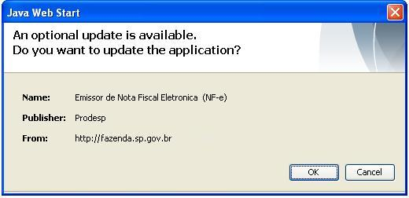
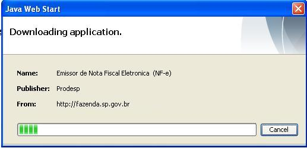

Software Emissor NF-e
Atualizações automáticas
O Software Emissor NF-e também poderá ser atualizado automaticamente.
Logo após a abertura do Software, este procurará as
possíveis atualizações, informando o
usuário e solicitando a confirmação.
Detectou-se uma nova atualização:

Para realizar o download das atualizações, clicar em OK. Após o download, o Software irá executar com as atualizações já instaladas.
Caso não deseje realizar a atualização, clicar em Cancel. O programa irá executar sem realizar a atualização.
Caso escolha OK
